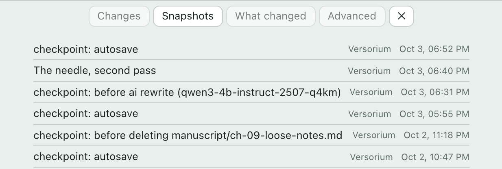
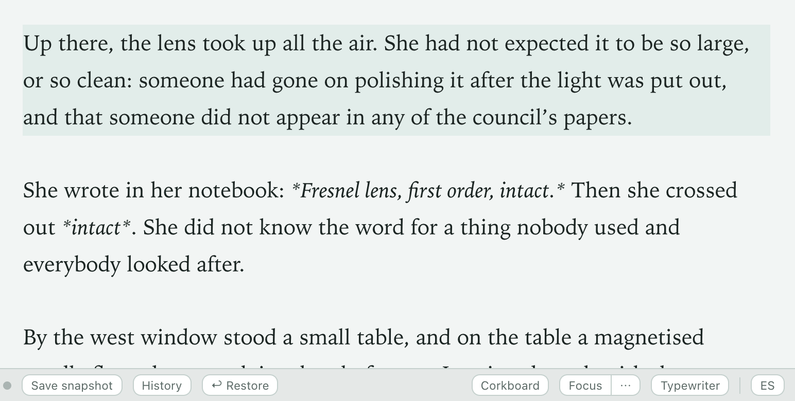
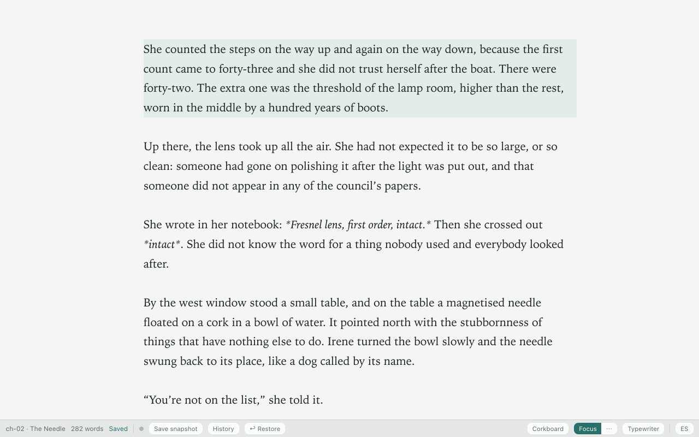
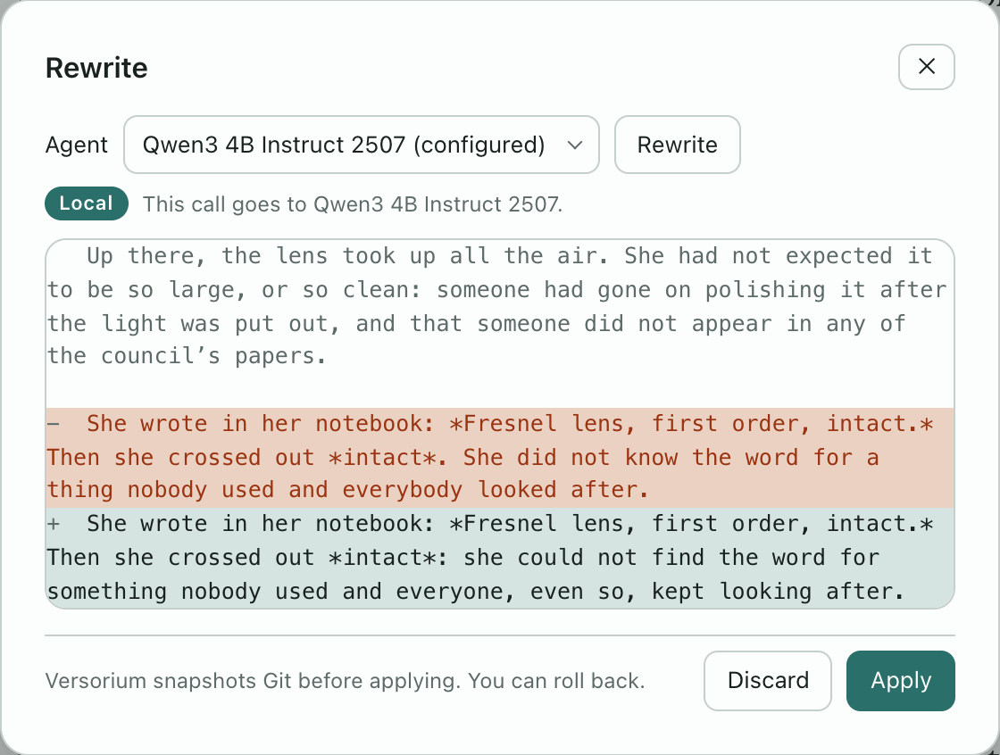

Write your novel.
Every draft is kept.
An app for your own computer that works offline. AI stays off until you call it.
Free · No account · Open source
Without JavaScript, the page follows your system’s mode.
Versorium with the chapter “The Needle” open. A sentence is typed, the status bar changes to “Saved”, and the history dot dims when a snapshot is taken.
Nothing gets lost.
It saves as you type. Every minute, and before AI touches anything, it takes a snapshot.


Yours, start to finish.
A folder on your disk
Every chapter is a plain text file that opens without Versorium.
AI, only if you call it
You choose which one, and it writes nothing without your permission.
- Off
- On your computer
- Your tool
Take it anywhere
It exports manuscript-format DOCX, EPUB, PDF and Scrivener.
A desk built for writing.
Corkboard.
The whole novel at a glance.

Focus.
Just you and the page.

Rewrite.
See every change before you apply it.
A real recording; the proposed text is a sample.

Typewriter · Spell check · Text size and width · Templates · One-click backup · In English and Spanish
The first release is on its way.
Nothing to download yet: follow it and you’ll know the day it’s out.
On GitHub: Watch → Custom → Releases · or follow it by RSS
By email ·
- macOS · tried · your system
- Windows · not tried yet · your system
- Linux · not tried yet · your system
Before you ask.
Does my novel leave my computer?
Only when you ask: sending it to GitHub, rewriting with an outside tool, or backing it up to a synced folder. On its own, the app only checks for updates, with nothing from your novel, and you can turn that off. No telemetry.
Do I need an account, or git?
No account: there’s no sign-up. And you don’t need git to write: Versorium takes the snapshots for you, with git built in. For now, git is only needed to go back to an old snapshot.
Which AI does it use?
None until you choose one: a model inside the app itself, Ollama, or Claude Code, Codex or OpenCode, which send the passage to their own service. Today it rewrites passages and checks continuity.
Can I bring my novel from Scrivener or Word?
Yes: it imports Scrivener, DOCX, EPUB and Markdown, and shows you a preview before creating anything. From DOCX, EPUB or Scrivener, bold, italics and scenes are lost.
Why is it free?
It’s open source (Apache-2.0) and made by one person. There’s no paid tier and no ads, and the app collects no data.
If Versorium disappears tomorrow, your novel doesn’t.
Free · No account · Open source